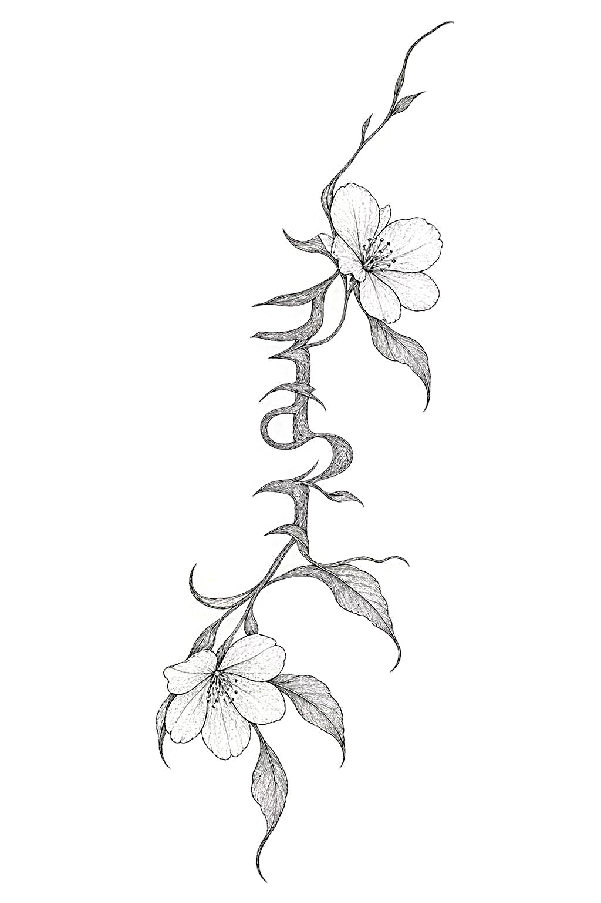

The project uses historical visual culture as a starting point for speculative interpretation.
01 / HISTORICAL FRAME
QING CHINA · 1644–1912
Before the imagined mark, there is a historical world.
Move across the notes to trace the historical frame.
01
Virtue and family honour
The Qing dynasty ruled China from 1644 to 1912. Its emperors were Manchu, while most subjects were Han Chinese. For women in both groups, life was shaped by Confucian ideals of obedience and chastity, and a woman’s virtue was closely tied to the honour of her family.
02
Manchu women
Manchu women occupied a slightly different position. They did not bind their feet, and in the early Qing some rode and hunted alongside men. Banner widows were permitted to remarry. Over time, however, Manchu women increasingly adopted the same ideals of chastity and feminine conduct.
03
Marking the body
Tattooing carried a different meaning. In Qing law, marking the skin was associated with punishment: offenders could be tattooed on the face or arm. Elsewhere, body marking could signify belonging. Among the Li people of Hainan, women’s tattoos marked adulthood and identity.
02 / SPECULATIVE QUESTION
THE QUESTION
What would she write on her own body if no one else decided for her?
In this world, the skin was never neutral. It was bound, covered, judged, and for those punished by the state, marked against their will. We take the most stigmatised kind of mark and imagine giving it back to the person who wears it.
Manchu women lived in between: in some ways freer than many Han women, yet still held to ideals of virtue, obedience and silence. That in-between space is where our question sits.
The tattoos are imagined objects, not evidence of a lost historical practice.
03 / IMAGINED MARKS
Three marks. Three imagined voices.
Each design reworks a floral symbol into a private language of feeling, memory and choice.

01
Apricot Blossom
Early spring · Youth · Feelings beyond the wall
02
Crabapple Blossom
Modesty · Private words · Beauty beyond the household
03
Peony
Prosperity · Honour · Self-expression
04 / INTERACTIVE 3D ARCHIVE
SELECT A MARKCLICK TO SWITCH THE 3D OBJECT
IMAGINED MARK 01
Tattoo 01
The first tattoo can already be explored as a three-dimensional object. Its final symbolic interpretation will be added once the group text is ready.
Rotate the object to see how the flat ornamental drawing has become a sculptural mark that wraps through space.
ARCHIVE NOTE
Meaning and historical references to be added.
MANCHU INSCRIPTION
ᡤᡳᠶᠠᠨ ᠮᡠᠵᡳᠯᡝᠨ
“Follow your heart”
Loading the mark…
DRAG TO ROTATE
SCROLL TO ZOOM01 / TATTOO 01
05 / MARK & FORM
INTERACTIVE PLACEMENT STUDY
Mark & Form
In public, she is fully dressed. The mark lives underneath, along her spine, where she alone decides who sees it.
Move across the image and the robe gives way for a moment, showing where the tattoo sits; then the fabric returns.
The mark is not made to be displayed. It is there whether or not anyone looks.
05 / STUDY 01MOUSE / TOUCH
MARK & FORMPLACEMENT / 01
MOVE TO EXPLORE
IMAGINED TATTOO PLACEMENTINTERACTIVE IMAGE STUDY
A SPECULATIVE ARCHIVE
The marks are imagined. The question of self-expression is not.
These designs do not reconstruct a historical tattoo practice. They imagine what bodily authorship might have looked like in a world where women’s conduct, dress and virtue were so often defined from outside.